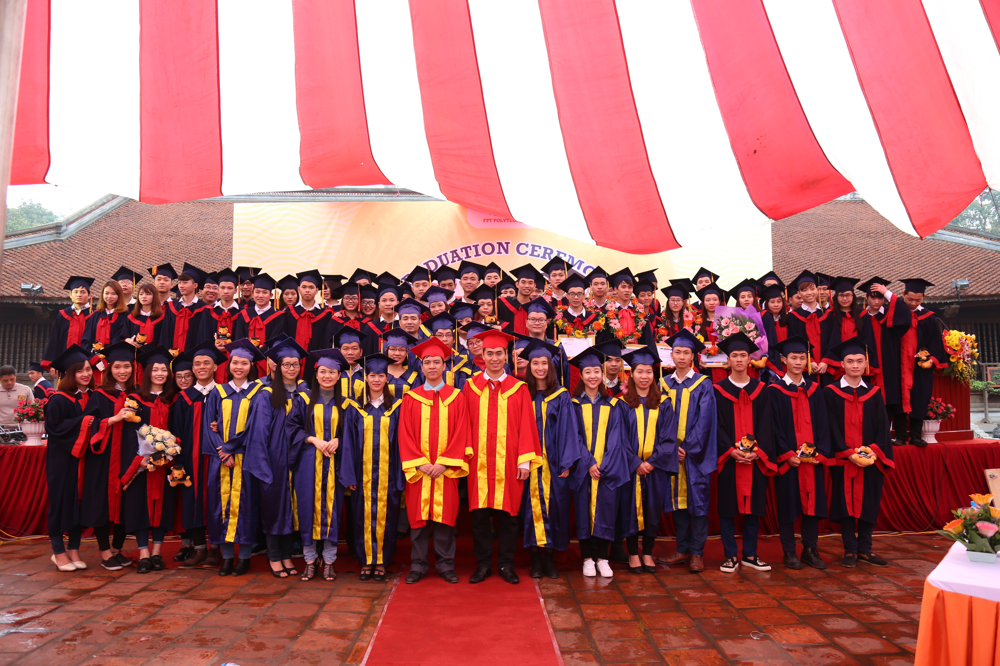

 FPT Polytechnic hân hạnh chào đón các bạn đến với môn học Xây Dựng Trang Web. Kết thúc môn học này các bạn có thể tự tay xây dựng cho mình một website tĩnh dựa trên kiến thức HTML và CSS.
Ngày nay, công nghệ thông tin và Internet đã tạo nên những thay đổi sâu sắc trong cuộc sống của chúng ta. Đặc biệt tại doanh nghiệp, website trở thành một thành phần không thể thiếu, là công cụ của doanh nghiệp để giới thiệu hình ảnh, quảng bá sản phẩm của doanh nghiệp với khách hàng, đối tác trong và ngoài nước thông qua internet, và kinh doanh trực tuyến.